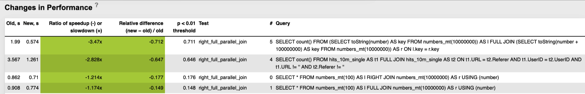
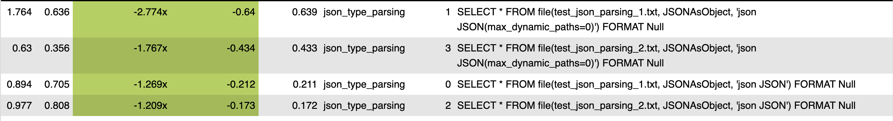
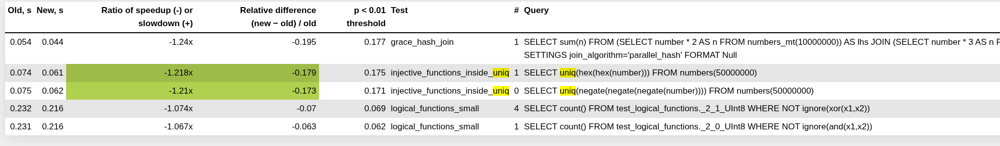
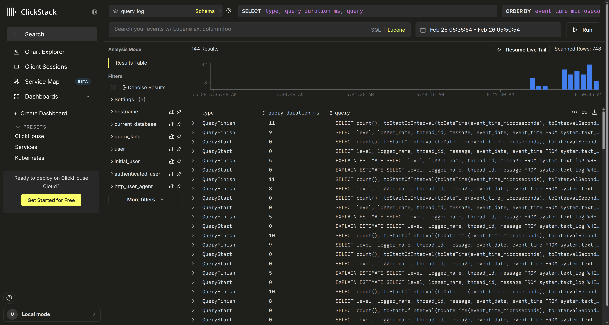

The data is saved to opentelemetry_span_log with dynamic sample rate.
It tracks both client-side (clickhouse-server)
and server-side (clickhouse-keeper) spans.
Developer: Michael Stetsyuk.
Performance Improvements
Primary key can be used in more cases
When the table is sorted by expressions on columns:
CREATE TABLE pageviews (user_id UInt64, ...)
ORDER BY cityHash64(user_id)
In 25.1, this query didn't use index:
SELECT * FROM pageviews WHERE user_id = 123456;
You could make it use the index as follows:
SELECT * FROM pageviews WHERE user_id = 123456
AND cityHash64(user_id) = cityHash64(123456);
In 25.2, both queries use the index!
Developer: Nihal Z. Miaji.
Indexes can be used in more expressions
When the table is sorted by expressions on columns:
CREATE TABLE pageviews
(
user_id UInt64,
region LowCardinality(Nullable(String)),
lat Nullable(Float64),
lon Nullable(Float64),
INDEX idx_region (region) TYPE set(100),
INDEX idx_lat (lat) TYPE minmax,
INDEX idx_lon (lon) TYPE minmax,
);
SELECT user_id FROM pageviews
WHERE coalesce(region, 'n/a') = 'Amsterdam'
AND ifNull(lat, 0) BETWEEN -10 AND 10
Developers: Nihal Z. Miaji.
Faster RIGHT and FULL JOIN
By parallelizing processing of non-joined rows:

Developer: Yarik Briukhovetskyi.
Faster JSON parsing
For the JSON data type:

Developer: Pavel Kruglov.
Faster uniq calculation
For the case without GROUP BY:

Developer: Raúl Marín.
Faster INSERT with minmax indices
Speed-up of the calculation of minmax indices:
Developer: Raúl Marín.
Something Interesting
Embedded ClickStack

Developers: Aaron Knudtson.
Time-Based One-Time Passwords
Secure interactive authentication in clickhouse-client,
with Google Authenticator, 1Password, Okta, and similar.
You can use AI for ClickHouse development. We welcome and embrace AI usage, as well as research and experiments with the frontier AI models and novel methods of AI applications for software engineering.
You don't have to disclose your usage of AI. You can tell about it, share your experience, and show the methods, but it is not required. AI is a normal developer's tool, similar to an IDE, an OS, or a keyboard. We don't judge your work on the basis of the usage of AI, but we recommend taking efforts to filter out slop before sending a pull request; otherwise, it may negatively affect your reputation as an engineer.
Meetups
— 🇺🇸 Seattle, Feb 26 — 🇮🇳 Bengaluru, Feb 28 — 🇦🇺 Melbourne: Data Streaming World, Mar 5 — 🇺🇸 Los Angeles, Mar 6 — 🇸🇬 Singapore: HackOMania, Mar 7 — 🇺🇸 San Francisco: Women+ in Open Source, Mar 9 — 🇯🇵 Tokyo, Mar 9 — 🇧🇷 Sao Paolo, Mar 10 — 🇺🇸 San Francisco, Mar 11 — 🇺🇸 Pittsburgh: Apache Iceberg Meetup, Mar 12 — 🇺🇸 New York, Mar 19 — 🇳🇱 Amsterdam: Launch & Learn, Mar 31
— pg_clickhouse — the fastest analytics for Postgres.
— AI-powered migrations from Postgres to ClickHouse
— How Cloudflare uses ClickHouse at quadrillion-row scale
— Lovable loves ClickHouse (why?)
— Langfuse ended up loving it too
— How Buildkite transformed test analytics with ClickHouse
— Is it over for metrics?
— Monitoring Temporal Cloud with ClickStack
— BigQuery connector for ClickPipes
— Wix built AI-driven incident response on ClickHouse
— How ClickHouse observes one of the largest Kafka deployments on earth